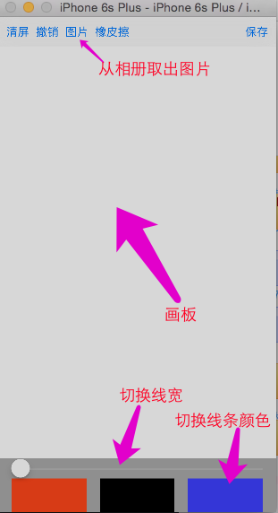

1.画板
1.1 界面效果以及功能

效果分析：
1> 最顶上 为一个 UIToolBar 控件，放置对于按钮
2> 中间为一个 自定义 view，用来绘制
3> 下面为一个view，有 UISlider和 3个 切换 颜色 的按钮
1.2 划线 以及 橡皮擦

1> 同一条线 如何实现 各种 位置 弯曲的？
- 上面手势解锁中，只需要 一个 UIButton 和一个 结束的位置，便可以画出一个 直线，而此处需要的是 各种曲线
- UIBezierPath 中 可以保存 addLineTo 的点，因此
- 可以用一个 UIBezierPath类型 的属性，每次手指拖动的时候，
addLineTo当前点即可，然后刷新画出该点2> 多个线 不同 宽度，不同颜色 如何 实现的？
- UIBezierPath 中，
setLineWidth即可以保存 该 路线的 宽度- 由于颜色的设置 使用
color set方式，因此，可以自定义一个 UIBezierPath 类型，添加一个 color属性即可3> 橡皮擦功能实现
- 由于 各个线是已经保存的。没法再 某条路径 几个点 擦除
- 因此 ，可以考虑 将 画笔的颜色 设置 为 白色，达到 "擦除"的效果
1.3 相册取图，旋转，缩小以及 绘画到屏幕

1> 相册中 取出 图片的实现
- 使用 UIImagePicker
2> 相册取出 图片 后，旋转 缩小 等 各种操作的实现
- 取出 图片后，用一个 view ，上面 防止一个 ImageView。将该 view 添加到 控制器 view 上（此时 在 屏幕 最上层）
- 给 ImageView 添加 各种手势，手势包含各种 形变 操作
- 由于 添加 手势的 view ，在 缩放，旋转 等 操作的时候，其 大小，位置 都会发生变化，（上图中，红色 部分就是 ImageView 的背景色，发现 其会发生变化）。因此 添加手势 的是 ImageView 而不是 外城 view
- 将 该 view ，化成一个图片（ImabeView 外面的范围，化成 透明即可），由于边框为 透明，因此 图片 边框 位置 已经 画的路径 不会 被遮盖
- 将 该图片 添加到 已经绘画 的路径 中去（因为 有 顺序限制，后面可以在 该 图片 上 划线）
3> 长按 将 该 图片 画到 屏幕上，并且 只是 遮挡 该图片 位置 部分，图片 外面部分 能够 看到
闪一下 的效果
0.25秒 时间内，将 imageview 的透明度 设置 为 透明，然后 在修改回来即可
1.4 项目截图
1.4.1 ViewController
#import <UIKit/UIKit.h>
@interface ViewController : UIViewController
@end
//
// ViewController.m
// DrawBoard
//
// Created by Mac on 17/3/9.
// Copyright © 2017年 Mac. All rights reserved.
//
#import "ViewController.h"
#import "DrawView.h"
#import "DBDHandleImgView.h"
typedef NS_ENUM(NSInteger, ClickedBut){
ClickedButRed = 100,
ClickedButBlack,
ClickedButGreen
};
@interface ViewController ()<UINavigationControllerDelegate, UIImagePickerControllerDelegate>
@property (weak, nonatomic) IBOutlet DrawView *drawView;
@end
@implementation ViewController
- (void)viewDidLoad {
[super viewDidLoad];
}
/**
* 隐藏状态栏
*/
- (BOOL)prefersStatusBarHidden{
return YES;
}
- (void)didReceiveMemoryWarning {
[super didReceiveMemoryWarning];
// Dispose of any resources that can be recreated.
}
/**
* 切换颜色
*/
- (IBAction)colorButClcked:(UIButton *)sender {
if (sender.tag == ClickedButRed) {
self.drawView.currColor = [UIColor redColor];
}
else if(sender.tag == ClickedButBlack){
self.drawView.currColor = [UIColor blackColor];
}
else{
self.drawView.currColor = [UIColor greenColor];
}
}
/**
* slider 滑动
*/
- (IBAction)sliderValueChanged:(UISlider *)sender {
self.drawView.currLineWidth = sender.value;
}
/**
* 清屏
*/
- (IBAction)clearScreen:(UIBarButtonItem *)sender {
[self.drawView clearScreen];
}
/**
* 撤销
*/
- (IBAction)undo:(id)sender {
[self.drawView undo];
}
/**
* 橡皮擦
*/
- (IBAction)erase:(UIBarButtonItem *)sender {
[self.drawView erase];
}
- (IBAction)save:(UIBarButtonItem *)sender {
}
/**
* 从相册 中 选取图片
*/
- (IBAction)pic:(UIBarButtonItem *)sender {
UIImagePickerController *imgPic = [[UIImagePickerController alloc] init];
imgPic.delegate = self;
BOOL isAvailable = [UIImagePickerController isSourceTypeAvailable:UIImagePickerControllerSourceTypePhotoLibrary];
if (!isAvailable) {
return;
}
imgPic.sourceType = UIImagePickerControllerSourceTypePhotoLibrary;
[self presentViewController:imgPic animated:YES completion:nil];
}
/**
* UIImagePickerController 的 代理方法
* 选择 照片 完毕的时候 调用
*/
- (void)imagePickerController:(UIImagePickerController *)picker didFinishPickingMediaWithInfo:(NSDictionary<NSString *,id> *)info{
UIImage *img = info[@"UIImagePickerControllerOriginalImage"];
[self dismissViewControllerAnimated:YES completion:nil];
DBDHandleImgView *handleView = [[DBDHandleImgView alloc] initWithFrame:self.view.bounds andBackImgBlock:^(UIImage *backImg) {
self.drawView.img = backImg;
}];
handleView.img = img;
[self.view addSubview: handleView];
}
@end
1.4.2 DBDHandleImagView
//
// DBDHandleImgView.h
// DrawBoard
//
// Created by Mac on 17/3/9.
// Copyright © 2017年 Mac. All rights reserved.
//
#import <UIKit/UIKit.h>
typedef void(^ImgBlock)(UIImage * backImg);
@interface DBDHandleImgView : UIView
@property (nonatomic, strong) UIImage *img;
@property (nonatomic, copy) ImgBlock imgblock;
- (instancetype)initWithFrame:(CGRect)frame andBackImgBlock:(ImgBlock)imgblock;
@end
//
// DBDHandleImgView.m
// DrawBoard
//
// Created by Mac on 17/3/9.
// Copyright © 2017年 Mac. All rights reserved.
//
#import "DBDHandleImgView.h"
@interface DBDHandleImgView()<UIGestureRecognizerDelegate>
@property (nonatomic, strong) UIImageView *innerImgView;
@end
@implementation DBDHandleImgView
/*
// Only override drawRect: if you perform custom drawing.
// An empty implementation adversely affects performance during animation.
- (void)drawRect:(CGRect)rect {
// Drawing code
}
*/
- (instancetype)initWithFrame:(CGRect)frame andBackImgBlock:(ImgBlock)imgblock{
if (self = [super initWithFrame:frame]) {
self.imgblock = imgblock;
[self setUp];
}
return self;
}
/**
* 设置
*/
- (void)setUp{
/**
* 添加 手势
*/
[self addGesture];
self.backgroundColor = [UIColor clearColor];
}
/**
* 添加手势
*/
- (void)addGesture{
/**
* 拖拽 手势
*/
UIPanGestureRecognizer *pan = [[UIPanGestureRecognizer alloc] initWithTarget:self action:@selector(panGesture:)];
[self.innerImgView addGestureRecognizer:pan];
/**
* 捏合 手势
*/
UIPinchGestureRecognizer *pin = [[UIPinchGestureRecognizer alloc] initWithTarget:self action:@selector(pinGesture:)];
pin.delegate = self;
[self.innerImgView addGestureRecognizer:pin];
/**
* 捏合 手势
*/
UIRotationGestureRecognizer *rotation = [[UIRotationGestureRecognizer alloc] initWithTarget:self action:@selector(rotation:)];
rotation.delegate = self;
[self.innerImgView addGestureRecognizer:rotation];
/**
* 长按
*/
UILongPressGestureRecognizer *longPress = [[UILongPressGestureRecognizer alloc] initWithTarget:self action:@selector(longPress:)];
[self.innerImgView addGestureRecognizer:longPress];
}
/**
* 拖拽 手势
*/
- (void)panGesture:(UIPanGestureRecognizer *)pan{
CGPoint transP = [pan translationInView:pan.view];
pan.view.transform = CGAffineTransformTranslate(pan.view.transform, transP.x, transP.y);
//复位
[pan setTranslation:CGPointZero inView:pan.view];
}
/**
* 捏合 手势
*/
- (void)pinGesture:(UIPinchGestureRecognizer *)pin{
pin.view.transform = CGAffineTransformScale(pin.view.transform, pin.scale, pin.scale);
//复位
pin.scale = 1;
}
/**
* 旋转 手势
*/
- (void)rotation:(UIRotationGestureRecognizer *)rotation
{
// 旋转图片
rotation.view.transform = CGAffineTransformRotate(rotation.view.transform, rotation.rotation);
// 复位,只要想相对于上一次旋转就复位
rotation.rotation = 0;
}
//长按的时候调用
// 什么时候调用:长按的时候调用,而且只要手指不离开,拖动的时候会一直调用,手指抬起的时候也会调用
- (void)longPress:(UILongPressGestureRecognizer *)longPress
{
if (longPress.state == UIGestureRecognizerStateBegan) {
[UIView animateWithDuration:0.25 animations:^{
//设置为透明
self.innerImgView.alpha = 0;
}completion:^(BOOL finished) {
[UIView animateWithDuration:0.25 animations:^{
self.innerImgView.alpha = 1;
//把当前的View做一个截屏
UIGraphicsBeginImageContextWithOptions(self.bounds.size, NO, 0);
//获取上下文
CGContextRef ctx = UIGraphicsGetCurrentContext();
[self.layer renderInContext:ctx];
UIImage *newImage = UIGraphicsGetImageFromCurrentImageContext();
//关闭上下文.
UIGraphicsEndImageContext();
self.imgblock(newImage);
//从父控件当中移除
[self removeFromSuperview];
}];
}];
}
}
/**
* 懒加载 imageview
*/
- (UIImageView *)innerImgView{
if(!_innerImgView){
_innerImgView = [[UIImageView alloc] init];
_innerImgView.frame = self.bounds;
_innerImgView.contentMode = UIViewContentModeScaleAspectFit;
_innerImgView.userInteractionEnabled = YES;
_innerImgView.backgroundColor = [UIColor redColor];
[self addSubview:_innerImgView];
}
return _innerImgView;
}
/**
*
*/
-(void)setImg:(UIImage *)img{
_img = img;
self.innerImgView.image =img;
}
@end
1.4.3 DrawView
//
// DrawView.h
// DrawBoard
//
// Created by Mac on 17/3/9.
// Copyright © 2017年 Mac. All rights reserved.
//
#import <UIKit/UIKit.h>
@interface DrawView : UIView
@property (nonatomic, strong) UIColor *currColor;
@property (nonatomic, assign) CGFloat currLineWidth;
@property (nonatomic, strong) UIImage *img;
/**
* 橡皮擦
*/
- (void)erase;
/**
* 撤销
*/
- (void)undo;
/**
* 清屏
*/
- (void)clearScreen;
@end
//
// DrawView.m
// DrawBoard
//
// Created by Mac on 17/3/9.
// Copyright © 2017年 Mac. All rights reserved.
//
#import "DrawView.h"
#import "DBDBezierPath.h"
@interface DrawView()
/**
* 当前 路径
*/
@property (nonatomic, strong) DBDBezierPath *currPath;
/**
* 已经 保存 的路径
*/
@property (nonatomic, strong) NSMutableArray *pathArray;
@end
@implementation DrawView
/**
* 懒加载方法
*/
- (UIBezierPath *)currPath{
if (!_currPath) {
_currPath = [DBDBezierPath bezierPath];
}
return _currPath;
}
- (NSMutableArray<DBDBezierPath *> *)pathArray{
if(!_pathArray){
_pathArray = [NSMutableArray array];
}
return _pathArray;
}
-(void)awakeFromNib{
[super awakeFromNib];
UIPanGestureRecognizer *pangeSture = [[UIPanGestureRecognizer alloc] initWithTarget:self action:@selector(panGesture:)];
[self addGestureRecognizer:pangeSture];
/**
* 设置 颜色 和 线宽 的默认值
*/
self.currLineWidth = 1;
self.currColor = [UIColor blackColor];
}
- (void)panGesture:(UIPanGestureRecognizer *)pan{
static CGPoint startP = {0,0};
static CGPoint currP = {0,0};
if (pan.state == UIGestureRecognizerStateBegan) {
startP = [pan locationInView:self];
/**
* 每次手指 移动 刚开始的时候，重设 当前 路径
* 开始 时，移动到 本次路径 起点
* 保存 此路径 绘画 时的 线宽 和 颜色
* 由于 颜色 没法 直接 存储 在 UIBezierPath 类型中：
* 这里，自定义了一个 DBDBezierPath类型，用于 存放 颜色
* 也可以 用一个 字典 保存 path 和 颜色，存储字典 即可
*/
[self.currPath moveToPoint:startP];
self.currPath.lineWidth = self.currLineWidth;
self.currPath.currColor = self.currColor;
self.currPath.lineJoinStyle = kCGLineJoinRound;
}
else if (pan.state == UIGestureRecognizerStateChanged){
currP = [pan locationInView:self];
/**
* 每次手指移动时，将 当前点 加入到 当前 路径
* 重 绘
*/
[self.currPath addLineToPoint:currP];
[self setNeedsDisplay];
}
else if (pan.state == UIGestureRecognizerStateEnded){
/**
* 每次 手指 移动结束，代表着 一个路径 完成
* 将 当前路径 添加 到 已 绘制 路径中去
*/
[self.pathArray addObject:self.currPath];
self.currPath = nil;
}
}
- (void)drawRect:(CGRect)rect {
/**
* 首先 绘制 前面已保存 的 路径
*/
for (int i=0; i<self.pathArray.count; i++) {
NSObject *path = self.pathArray[i];
/**
* 如果是图片
*/
if ([path isKindOfClass:[UIImage class]]) {
[(UIImage *)path drawAtPoint:CGPointZero];
}
else{
[((DBDBezierPath *)path).currColor set];
[(DBDBezierPath *)path stroke];
}
}
/**
* 绘制 当前 路径
*/
[self.currPath.currColor set];
[self.currPath stroke];
}
-(void)setImg:(UIImage *)img{
[self.pathArray addObject:img];
[self setNeedsDisplay];
}
/**
* 橡皮擦
*/
- (void)erase{
self.currColor = [UIColor whiteColor];
}
/**
* 撤销
*/
- (void)undo{
[self.pathArray removeLastObject];
[self setNeedsDisplay];
}
/**
* 清屏
*/
- (void)clearScreen{
[self.pathArray removeAllObjects];
[self setNeedsDisplay];
}
@end
1.4.4 DBDBezierPath
//
// DBDBezierPath.h
// DrawBoard
//
// Created by Mac on 17/3/9.
// Copyright © 2017年 Mac. All rights reserved.
//
#import <UIKit/UIKit.h>
@interface DBDBezierPath : UIBezierPath
@property (nonatomic, strong) UIColor *currColor;
@end
//
// DBDBezierPath.m
// DrawBoard
//
// Created by Mac on 17/3/9.
// Copyright © 2017年 Mac. All rights reserved.
//
#import "DBDBezierPath.h"
@implementation DBDBezierPath
@end